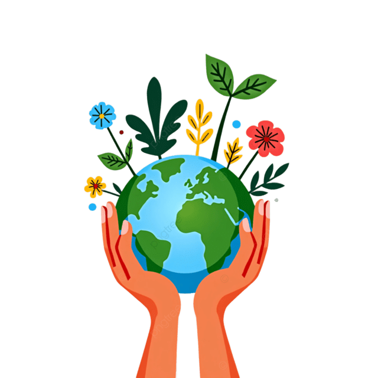
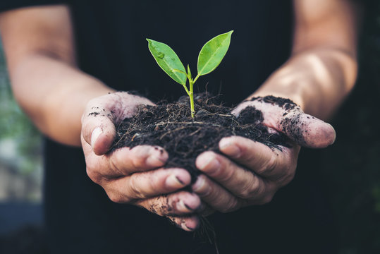
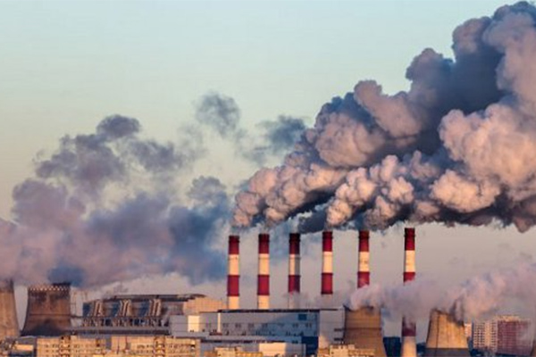
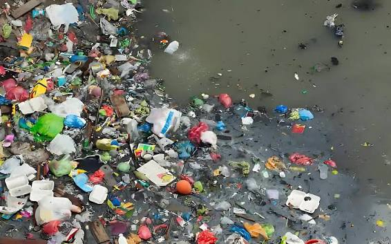
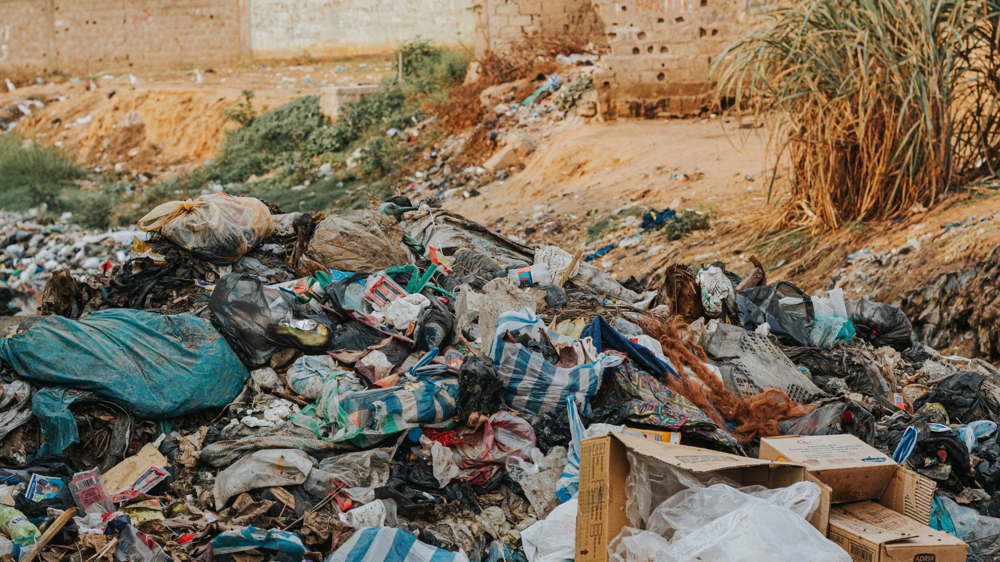
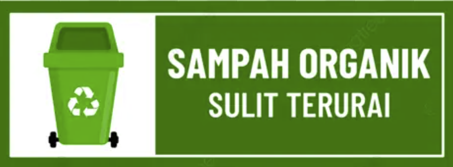
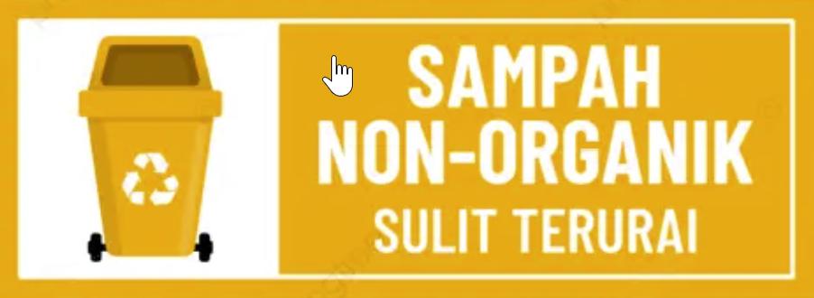
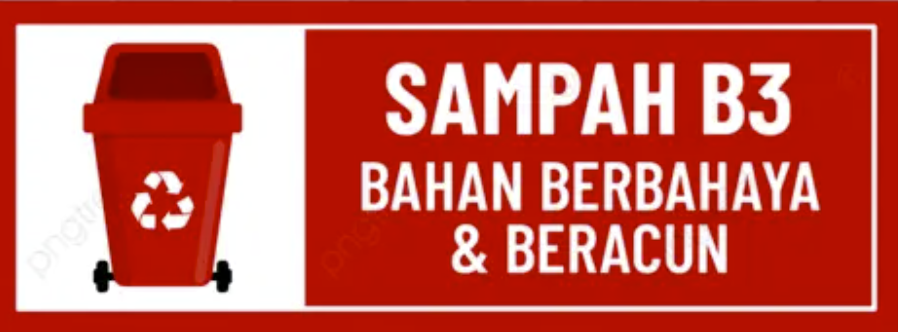

Small actions can make a big difference. Mari bersama menjaga bumi dengan langkah sederhana, mengurangi sampah, menjaga kebersihan lingkungan, dan menciptakan masa depan yang lebih hijau untuk generasi mendatang.
Mulai Peduli →
EarthCare merupakan platform edukasi lingkungan yang mengajak masyarakat untuk lebih peduli terhadap bumi melalui kebiasaan sederhana, pengelolaan sampah, dan aksi nyata dalam menjaga lingkungan.

EarthCare merupakan website edukasi lingkungan yang mengajak masyarakat untuk lebih peduli terhadap bumi dan menjaga kelestarian alam.
Melalui website ini, pengunjung dapat mengenal berbagai masalah lingkungan, mempelajari tips ramah lingkungan, memahami pengelolaan sampah, serta menemukan berbagai aksi sederhana yang dapat dilakukan untuk mengurangi pencemaran.
Karena setiap langkah kecil memiliki arti besar bagi masa depan bumi. Mari bersama menciptakan lingkungan yang lebih bersih, sehat, dan hijau.
Kenali tiga jenis pencemaran yang dapat merusak lingkungan.

Pencemaran udara terjadi akibat masuknya zat berbahaya ke udara, seperti asap kendaraan, asap pabrik, dan pembakaran sampah yang dapat mengganggu kesehatan.

Pencemaran air terjadi ketika air tercampur dengan sampah, limbah, atau bahan kimia sehingga kualitasnya menurun dan membahayakan makhluk hidup.

Pencemaran tanah terjadi akibat sampah, limbah, dan bahan kimia yang mencemari tanah sehingga mengurangi kesuburannya dan merusak lingkungan.
MPengelolaan sampah merupakan salah satu cara penting untuk mengurangi pencemaran lingkungan.

Sampah yang berasal dari makhluk hidup, seperti sisa makanan, daun, dan kulit buah. Dapat diolah menjadi kompos.
Contoh:sisa makanan, daun, dan kulit buah. Dapat diolah menjadi pupuk kompos.

Sampah seperti plastik, kaca, dan kaleng. Dapat dipilah untuk digunakan kembali atau didaur ulang.
Contoh:botol plastik, kaleng, dan kertas. Dapat didaur ulang atau digunakan kembali.

Sampah berbahaya seperti baterai bekas, lampu tertentu, dan bahan kimia. Harus dikumpulkan dan dibuang melalui fasilitas khusus.
Contoh:Baterai bekas, lampu tertentu, dan limbah kimia.
Lihat informasi kualitas udara berdasarkan data Open-Meteo untuk wilayah Palembang.
Current Air Quality Data
Data source: Open-Meteo Air Quality API. Data merupakan hasil pemodelan.
Kebiasaan kecil yang bisa kita lakukan untuk membantu menjaga bumi.
Kurangi penggunaan plastik sekali pakai dengan membawa tas belanja dan botol minum sendiri.
Gunakan air secukupnya dan hindari membuang-buang air dalam kegiatan sehari-hari.
Tanam dan rawat pohon untuk membantu menjaga kualitas udara dan kelestarian lingkungan.
Pilah sampah dan daur ulang barang yang masih bisa digunakan untuk mengurangi pencemaran lingkungan.
Punya saran atau ide untuk menjaga lingkungan? Kami ingin mendengarnya.